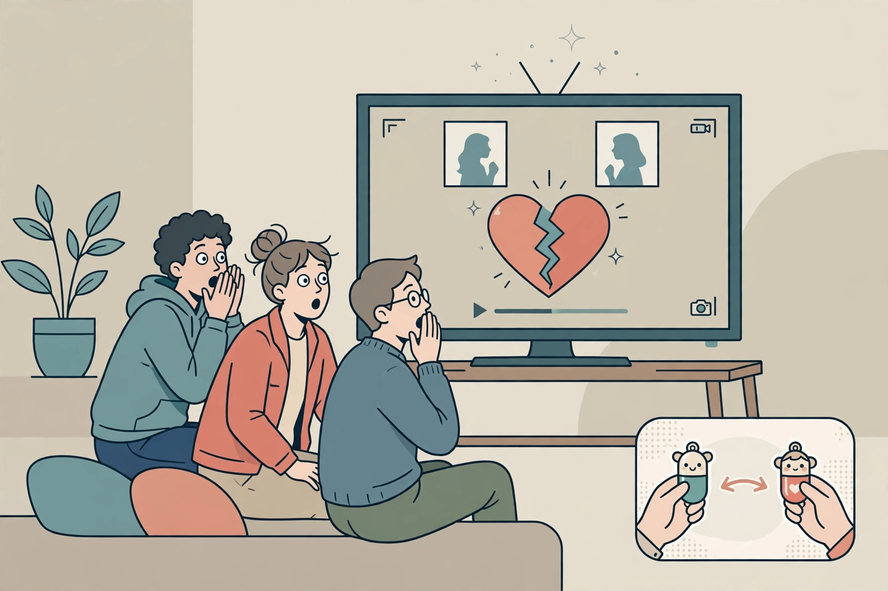

2026-11-18（水）
トップトレンド：ナオキマン（4.2M posts）
示唆：スタバのカプセルトイは、サンリオ食玩の3日間のフェーズ（買えない→ダブる→交換する）が発売当日に圧縮されて起きている。ブラインド商品の「揃わなさ」は今や発売初日から交換募集を生む前提になっており、交換の場や再入荷情報を早めに示すことが、買い逃した層の熱を維持する接点になる。
この日の記事を読む →Instagram / Threads（読み取り専用、トレンド起点）の毎日観測を記事化したダッシュボード。話題・意見・論調・話している層の傾向と、トレンドからの示唆を記録する。
セザンヌのプチプラリップのバズが、フルメイクの色系統へ拡大し、やがて検証・冷静化へ移った一連の流れ。
バンダイのブラインド食玩が、発売日から3日間で「買えない→ダブる→交換する」とフェーズを進めた事例。
「触感を言葉と音で伝える」コンテンツの定着から、安全性の議論、他ジャンルへの波及まで。
Netflixの恋愛リアリティ番組がトレンドに継続して登場し、口コミ経由で新規視聴を取り込み続けている。
公的キャンペーンへの著名人・インフルエンサー起用が、起用のたびに妥当性を問われる構図。
示唆：スタバのカプセルトイは、サンリオ食玩の3日間のフェーズ（買えない→ダブる→交換する）が発売当日に圧縮されて起きている。ブラインド商品の「揃わなさ」は今や発売初日から交換募集を生む前提になっており、交換の場や再入荷情報を早めに示すことが、買い逃した層の熱を維持する接点になる。
この日の記事を読む →
示唆：サンリオ食玩は「買えない」から「ダブる・交換する」へフェーズが移った。ブラインド商品の不満は「買えない」から「揃わない」へ形を変えながら続き、交換募集というユーザー同士の解決が自然発生している。交換の場やダブり救済の仕組みを示すことが、コレクターの熱を維持する接点になる。
この日の記事を読む →
示唆：サンリオ食玩は発売日当日に「買えない・揃わない」実況がトレンド化しており、ブラインド商品の「揃わなさ」は開封の楽しさと同時に不満の種でもある。入荷情報や交換の場を早めに示すことが、「買えない」体験を「探す楽しみ」に変える接点になりやすい。
この日の記事を読む →
示唆：烏龍茶リップは「バズ→購買→色番の迷い」という購買ファネルの摩擦が可視化されている。色番選びのガイドが「迷い」を解消する接点になり、まとめアカウントやブランドの次の一手になりやすい。
この日の記事を読む →
示唆：烏龍茶リップは「色の名前」から「メイク全体の色系統」へ広がり、飲み物喩えの言語化とデパコス比較が拡散の型になっている。色名や喩えに“語れる余白”があると、ユーザーが自発的に検証・布教する。
この日の記事を読む →
示唆：Threadsの「いいねスタンプ」は、プラットフォーム側の小さな仕掛けが「試してみる」連鎖を生み、推し活（りんご＝Mrs. GREEN APPLE）と結びついて拡散する例。仕掛けは「自分のものにできる」余白があると広がりやすい。
この日の記事を読む →話している層の傾向は、プロフィールや投稿から読み取れる印象であり統計ではない。